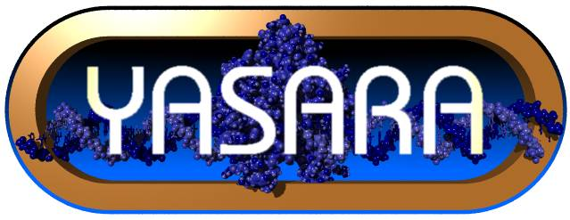
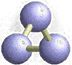
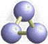

Viewing Three Dimensional Structures
Software Tools

Yasara
Yasara (Gregor Högenauer, Günther Koraimann, & Andreas Kungl [Univ. Graz, Austria]; & Gert Vriend [Univ. Nijmegen, the Netherlands]) is an awesome program for viewing an labeling 3-D structures. To visual your own pdb structure right click and chose open with (Yasara). This free program is part of a more extensive molecular modeling package.

RasMol
RasMol is software for looking at molecular structures. It is very fast: rotating a protein or DNA molecule shows its 3D structure.
Biodesigner
Biodesigner is a molecular modeling and visualization program for personal computers which is capable of creating homologous models of proteins, evaluate, and refine the models.

RasTop
RasTop - is a molecular visualization software adapted from the program RasMol by wrapping a user-friendly graphical interface around the "RasMol molecular engine". The software allows several molecules to be opened in the same window and several windows to be opened at the same time. Through an extended menu and a command panel, users can manipulate numerous molecules rapidly and learn about them. Work sessions are saved in script format and are fully regenerated with a simple mouse click.
Updated: November, 2025